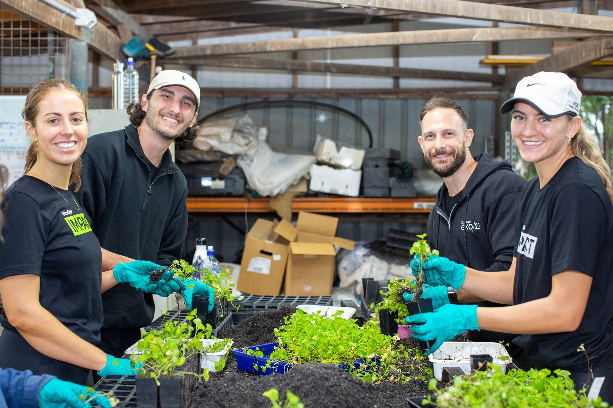
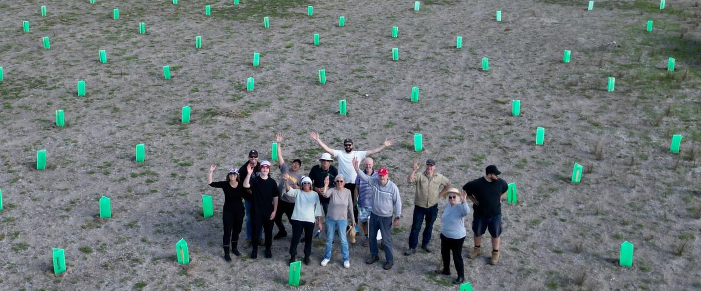
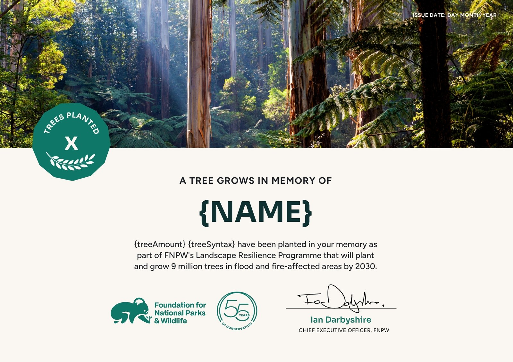

The best gifts don’t sit under a tree. They grow into one.
Give a tree and help bring back native bushland across Australia. Your gift supports on-ground restoration, creating habitat for wildlife and helping our landscapes become healthier and more resilient.
Give a Tree. Grow a little more bush.
All amounts in Australian dollars (AUD). 100% of the trees are native and planted in Australia’s priority landscapes. Minimum gift $10.

Looking for a gift that’s more meaningful?
Give a Tree for a birthday, a thank you, or simply because you want to give something that does a little more good for Country.
Each tree gift comes with a personalised certificate, giving them something special to receive while helping bring back the bush.
Give a Tree today and help bring back the bushFour steps, and the bush gets a little bigger.
Choose your gift
Pick the size of your gift, from A$10 for a single tree, or enter your own amount.
Write a dedication
Write a dedication to your recipient, in honour of, in memory of, or as a thank you.
Get the certificate
Keep the certificate yourself, or choose to send it straight to your recipient.
We plant your trees
We plant your trees in key priority landscapes, where they do the most good.
A little note from us: to help reduce unnecessary printing, we recommend printed certificates for gifts of $100 or more. For gifts under $100 you are very welcome to print the certificate yourself at home or at work. If you are a business wanting more than one certificate, or personalisation with your company logo, email fnpw@fnpw.org.au or call 1800 898 626 to organise your gift.
Give a little more bush this Christmas
This season, give a tree with our special Christmas certificate, a thoughtful way to celebrate friends, family, colleagues or clients while helping bring back the bush.
Less stuff. More bush.
Give a Tree for ChristmasMarjolijn & Rachael
One tree has been planted in your honour as part of the Foundation for National Parks & Wildlife’s Landscape Resilience Program, which will plant and grow 8 million trees in rural and fire-affected areas by 2030.
Placeholder. Swap for the Christmas certificate artwork.

Recognise your team, clients or partners.
Give a Tree is a simple way for businesses to celebrate a milestone, say thank you, or share a little appreciation.
A thoughtful gift for them. A positive impact for the bush.
Giving to a group? We can arrange Give a Tree certificates in bulk, including your company logo. Get in touch and we will organise yours.
Remember someone special.
Give a Tree in memory of someone you love and help create a lasting tribute while supporting the restoration of native bushland.
It is a meaningful way to honour their life and share their memory with family and friends.
A living tribute to someone who will always be remembered.
Give a Tree in memory of
Frequently asked
When will I get my digital certificate?
Your digital certificate is emailed to you the next business day after your gift is received. If you asked us to send it straight to the recipient, it goes to their inbox instead, on the date you nominated.
I’ve requested a physical certificate. When will it arrive?
Printed certificates are posted within five business days and usually arrive within a week or two, depending on where you are in Australia. If you need one by a set date, let us know when you give and we will do our best to get it there in time.
Can physical certificates be sent overseas?
Yes. International post takes longer and delivery times vary by country, so we recommend sending the digital certificate as well, so your recipient has something to open on the day.
I’ve noticed an error on my certificate. What should I do?
Email fnpw@fnpw.org.au with your gift reference and the correction, and we will reissue it for you. There is no charge to have a certificate corrected and reissued.
Where will my gifted tree be planted? Can I choose the site?
Trees are planted in the priority landscapes where they will do the most good, which means we cannot allocate an individual tree to a site you choose. Our environmental team selects native species suited to the local ecology of each planting site, so the trees survive and rebuild functioning habitat rather than a monoculture.
Will a plaque or dedication be placed on my tree?
No. Restoration sites are working landscapes and often remote, so we do not place plaques or markers on individual trees. Your dedication lives on the certificate instead, which is yours to keep, frame or pass on.
I’m having trouble completing my donation. What should I do?
Try refreshing the page first, and check that your browser is not blocking third-party content. If it still will not go through, call us on 1800 898 626 or email fnpw@fnpw.org.au and we will take your gift over the phone.
Is my gift tax deductible?
Yes. The Foundation for National Parks & Wildlife is a registered Australian charity (ABN 51 248 905 949) with Deductible Gift Recipient status. Gifts of $2 or more are tax deductible in Australia, and your receipt is emailed with your certificate.